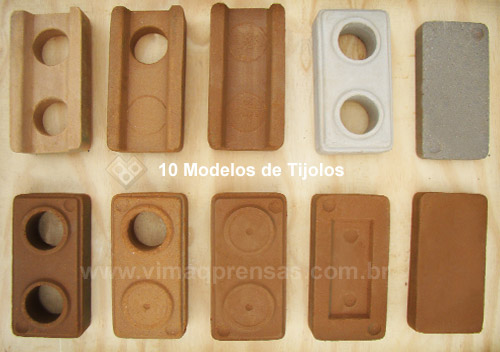

História e Marca da Dotton
Localizada nos limites da cidade de Campo Grande, Mato Grosso do Sul Indústrias DOTTON surgiu apartir de uma iniciativa do nosso fundador Jhon Dotton que desenvolveu um maquinário capaz de reutilizar materiais descartados em obras de construção, juntamente com outros materiais para criação de tijolos ecologicamente corretos e por um baixo custo. Com essa invenção ele começou um pequeno negócio vendendo os tijolos ecológicos por um pequeno preço para vizinhos e pequenos construtores ao redor da sua região. Logo o que era uma máquina se tornou 2, 4, 8 e assim se multiplicaram e o negócio prosperou. Atualmente a empresa Dotton conta com uma industria com mais de 200 maquinas que produzem em média 2500 unidades de tijolos ecológicos diariamente e mais de 100 colaboradores.
Nosso objetivo é: "Criar um meio de construção civil ecológico e sustentavel por um menor custo".
Nossa empresa conta com os maquinarios mais otimizadas e com as melhores tecnilogias para desenvolverem um produto de alta qualidade, ecologicamente correto e pelo menor custo de mercado para revolucionar todo o mercado da construção civil